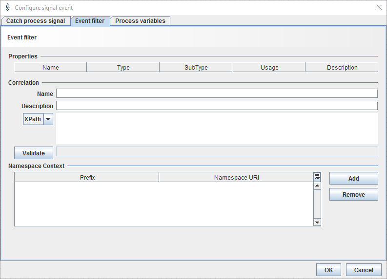
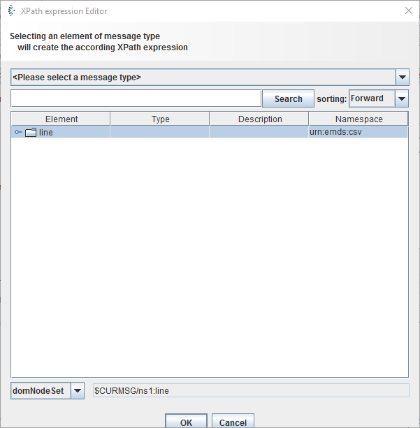

Event filter

Topic content
Description
Event filters are Boolean statements, which regulate the start of sub-processes.
Purpose of object
Event filters are used to regulate which signals are allowed to start an explicit subprocess. This is done in Java or XPath.
Configuration
The dialog to configure the event filter looks like:

The dialog to configure the XPath expression looks like:

Step by Step
1.Double-click on start-event you want to regulate with the event filter.
2.Choose the tab event filter by clicking on it
3.In the Correlation field, you can define your boolean expression. By right clicking on the field, you can also choose different elements, instead of writing them by hand.
4.There are also elements with the addition (XPath Editor), if you choose them, you can select a message type in the opening dialog.
4.1. After the message type is selected, an element can be chosen from the table.
4.2. If the data-type of the element needs to be changed, you can do that in the drop down menu on the bottom of the dialog.
4.3.By clicking OK the element will be inserted in the Correlation field.
5.Add a variable or another element to the field, that in the end, a comparison will control the start of the sub-process.
E.g. for XPath: $MSG/ns1:line/ns1:unit = 0
E.g. for Java: (Integer)xpath( "$MSG/ns1:line/ns1:unit", "int", _CTXT_ ) == 0
|
If you have chosen a boolean value, there is no comparison needed. |
9. If the incoming signal disposes elements in different XML namespaces, they can be added and configured in the namespace context.
10. Click on Validation.
11. After the Validation was successful, click on OK to save and integrate the filter.